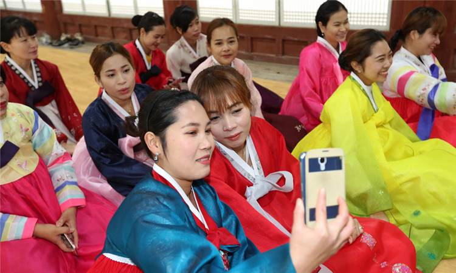

#BEXCO穿汉服#
BEXCO是釜山会展中心的简称，全称为Busan Exhibition & Convention Center。
釜山国际会展中心共有四层，分为地上3层和地下1层。建筑分为展示厅、会议大厅和附带设施构成。展示厅总面积达1万 3002平米，由1楼的专门展示厅、2楼和3楼的中小展示厅，地下常设展示厅和野外展示厅组成。

图：韩服
展示厅是韩国国内唯一的单层无柱结构，能够承受5吨的地面压力，并且展示厅内布置可以根据顾客需要随意调整。
在会展中心的右侧是韩服展览中心，这里有韩服体验拍照活动，展览的服饰主要为皇室贵族和平民服饰两类，游人可依据自己的喜好选择好韩服，在工作人员的帮助下进行试穿并拍照留念，同时还可以了解更多韩国的历史和韩服文化。
地址：釜山海云台区APEC路55
交通：地铁2号线Centum City站1号出口，步行约10分钟。
电话： +82-51-740-7300
官方网站：www.bexco.co.kr
#札嘎其市场淘海鲜#
札嘎其市场指的是从影岛大桥底下的干鱼市场至忠武洞早市区一带，这是韩国最大的水产市，已有50多年的历史。这里的海鲜种类很多，质量好、新鲜而且明码标价，即使是外地游客，也不用担心被宰。
根据海鲜的不同，以2人份为基准的话，大概消费在2-6万韩元左右，就可以吃到新鲜的生鱼片，并且这里地道的庆尚道方言，也给海外游客留下深刻的印象。
地址：釜山中区札嘎其海岸路52号
交通：地铁1号线札嘎其市场站8或10号口出，步行可到。
电话： +82-51-713-8000
官方网站：jagalchimarket.bisco.or.kr

图：札嘎其市场海鲜
#游轮旅行 （Tezroc Cruise）#
Tezorc Cruise 是乘坐按照19 世纪荷兰的船型复原的游轮“Nurimaru号”游览五六岛、太宗台、釜山港等釜山旅游胜地的游轮主题旅游商品。
Nurimaru 在韩文中是世界顶峰的意思，Nurimaru 号游轮共有3 层。船上有宴会场、练歌房、餐厅、露天甲板长椅、露天演奏场及观众席等。从釜山市中央洞站附近的沿岸旅客客运站出发。运行路线及日程一周前确定，需要提前确认。
地址：釜山中区中央洞5 街16 号 沿岸旅客客运站2 楼
交通：地铁1 号线中央洞站2 号出口出来，向釜山观光游览船客运站方向步行10 分钟。